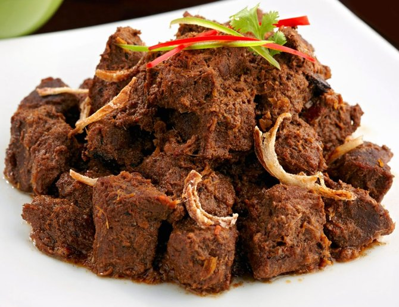

Beef Rendang

make world's most delicious food at least according to a CNN poll
a few years back I am talking about rendang so rendang is a traditional
dish
from Indonesia and also Malaysia they also serve it in Singapore and probably
a few other countries
rendang is basically a curry but unlike a Thai curry it's very dry and
concentrated it's super super flavorful
Source>
Ingredients
- 10g dried chilies
- 5-6 cardamom
- 1 pc star anise
- 8-10 cloves
- 5-6 cinnamon
- 4 candlenut
- 2-inch pc ginger chopped
- 1 stalk
- 1 lemongrass, finely chopped
- 2-inch pc galangal, chopped
- 1½ cup shallots, chopped
- 6 cloves garlic
- 1 cup coconut milk
- tamarind
- beef chuck
- 5-6 kaffir lime leaves
- kerisik/toasted coconut paste
- salt
- fish sauce
Steps
- Add to you grinder 10g dried mild chilies,
8 pc cloves, 5-6 cinnamon,
5 pc green cardamom, 1 star anise, grind it
- Add 4 candlenuts to the ginder you don't add this nuts to grinder early couse they're oily
- candlenuts are toxic when they're raw so please don't
be snacking on them
- Blend 2-inch pc galangal, 1 lemongrass, finely chopped,
2-inch pc ginger chopped, 1 chopped stalk, blend it and also add the grounded species
- For the curry: Bring ½ cup of coconut milk to a boil in
a large heavy-bottomed pot. Add the curry paste and cook over medium heat, stirring
constantly, until the paste is thick, and the coconut oil is starting to sizzle away
from the paste
- Add the beef and toss to mix with the paste, add the remaining coconut milk and scrape
off any bits of curry paste that might be stuck to the bottom of the pot.
- Add salt and tamarind, then keep the pot loosely covered, let it simmer on low heat for
2.5-3 hours or until beef is fork tender. In the beginning, stir it every 20 minutes or so,
but as the sauce gets thicker, you need to stir more frequently to make sure the curry paste
doesn't stick and burn to the bottom of the pot. Towards the end I stir it every 5 minutes.
You should have a very thick, not runny sauce, and you can add more water if it gets too dry as
it cooks. If the beef is done, but there is too much liquid, just open the pot and stir for a few more
minutes to let it reduce.
- In the last few minutes of cooking stir in 1 tablespoon of kerisik, and roughly tear kaffir lime leaves
into chunks and stir them in, letting them cook for a few more minutes to infuse. Taste and adjust seasoning as needed.
- Serve with rice, enjoy!